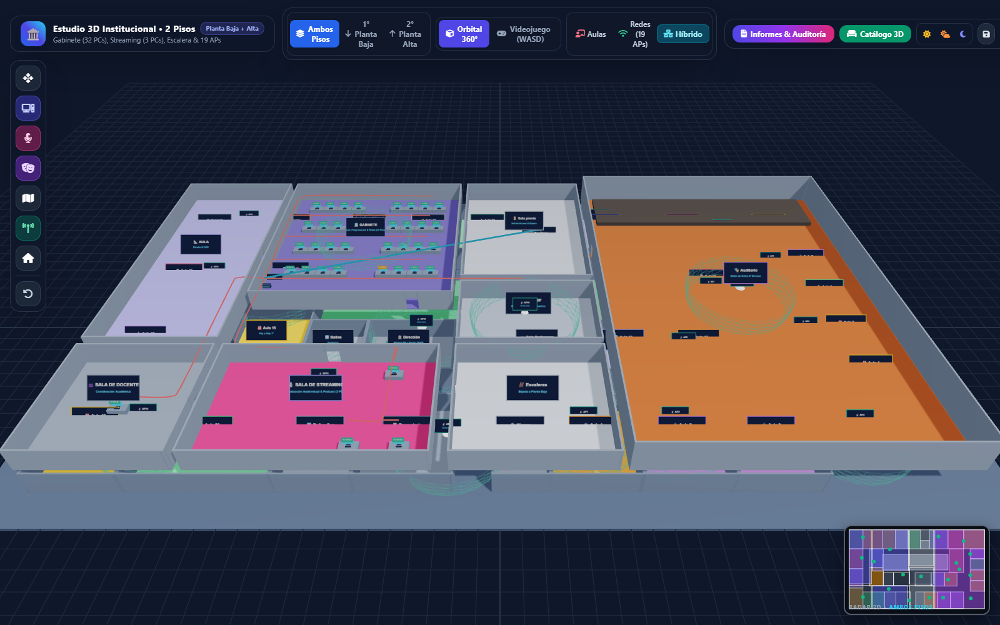
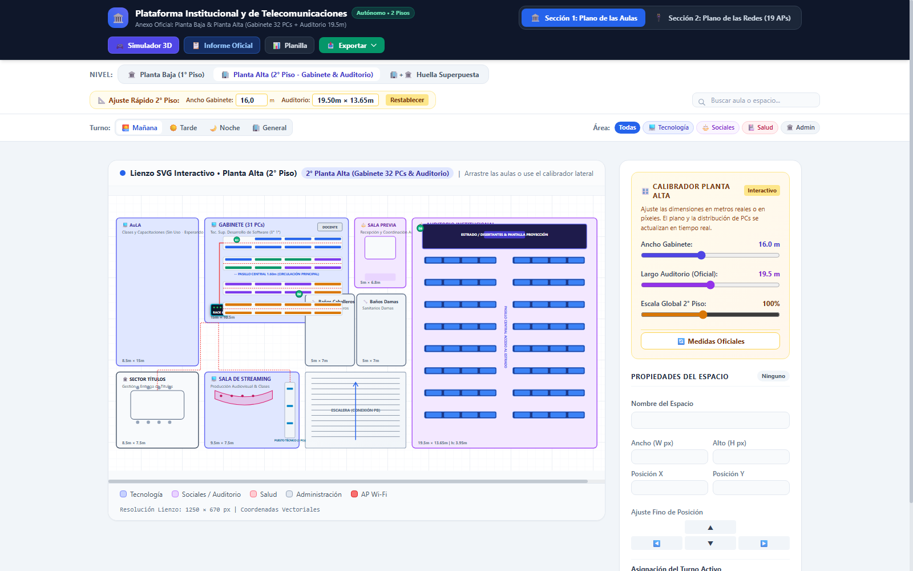

Simulador 3D, Plano 2D Oficial, Calibrador & Presentación 15 Diapositivas
Suite integral de arquitectura técnica del IES "Nuevo Horizonte" basada en el informe oficial de Planta Alta: Gabinete con 31 PCs, Rack Mural SOHO 6U pivotante, Sala de Streaming, Auditorio Institucional (19.5m × 13.65m), red Wi-Fi Mesh Decos 1-3 y 16 APs en Planta Baja.
Estudio Simultáneo 2D + 3D (Pantalla Dividida)
Trabajá de manera integrada: arrastrá o girá cualquier aula (90° / tecla R) en el Plano 2D y sincronizá instantáneamente con el Simulador 3D / Videojuego mediante el botón 💾 Guardar & Sincronizar. Incluye pasillos distribuidores oficiales en Planta Alta y Planta Baja, y el Informe Técnico Oficial de 14 Puntos.
Simulador 3D: Planta Baja y Planta Alta Oficial
Recorre el instituto completo en 3D interactivo en primera persona (WASD) o vista orbital 360°. Explora el GABINETE con 31 PCs, el RACK Mural SOHO 6U, la SALA DE STREAMING con puesto técnico, el AUDITORIO con estrado y platea, y la ESCALERA tangible de hormigón. Fichas de inspección con fotografías reales y calibrador de medidas.

Plano 2D Interactivo (Página 6 Oficial & Informe 14 Puntos)
Mapeo vectorial fiel de Planta Baja y Planta Alta según el plano arquitectónico oficial: Gabinete de 31 PCs en 4 islas, cableado estructurado rojo UTP Cat 6, Sector Títulos, Sala de Streaming, sanitarios y Auditorio. Incluye botón de descarga de informe PDF oficial de 14 puntos y calibrador rápido de medidas.

Presentación Oficial 16:9 Editable (15 Diapositivas)
Presentación institucional ejecutiva ampliada de 9 a 15 diapositivas nativas editables. Incluye sección dedicada a Planta Alta con el plano arquitectónico oficial, fotos reales del Gabinete (31 PCs), Rack 6U pivotante, Auditorio, Sala de Streaming, Sector Títulos y arquitectura de telecomunicaciones.
Planos Gráficos & Fotos de Evidencia Real
Archivos vectoriales SVG limpios y banco de fotografías reales extraídas del informe oficial: